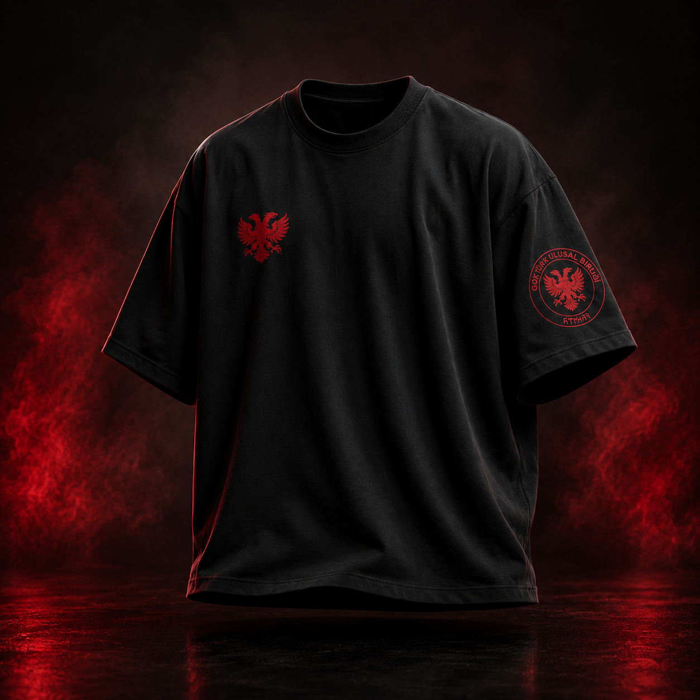

Siyah zemin
Farklı kombinlere kolayca uyum sağlayan yalın görünüm.
GÖKTÜRK ULUSAL BİRLİĞİ RESMÎ MAĞAZA
Çift başlı kartal işlemesi, siyah kumaş ve rahat oversize kesim.
499 TL

SELÇUK T-SHIRTÜRÜN GÖRÜNÜMLERİ
SELÇUK T-SHIRT, siyah kumaş üzerinde kırmızı arma detaylarını öne çıkaran sade bir tasarıma sahiptir.
ÜRÜN BİLGİSİ
Günlük kullanım için tasarlanan siyah tişört, göğüs ve kol üzerindeki kırmızı motiflerle tamamlanır.
Farklı kombinlere kolayca uyum sağlayan yalın görünüm.
Göğüste çift başlı kartal, kolda dairesel birlik arması.
Rahat bir silüet için geniş ve modern kesim.
BEDENLER
Ürün S, M, L ve XL beden seçenekleriyle sunulur. Kesin ölçülerinizi siparişten önce teyit edebilirsiniz.
| Beden | Göğüs ölçüsü | Ürün boyu |
|---|---|---|
| S | Ölçü bilgisi teyit aşamasında | — |
| M | Ölçü bilgisi teyit aşamasında | — |
| L | Ölçü bilgisi teyit aşamasında | — |
| XL | Ölçü bilgisi teyit aşamasında | — |
TESLİMAT
Siparişiniz, sipariş adımında belirttiğiniz teslimat adresine gönderilir.
Siparişiniz hazır olduğunda genel merkezden teslim alabilirsiniz.